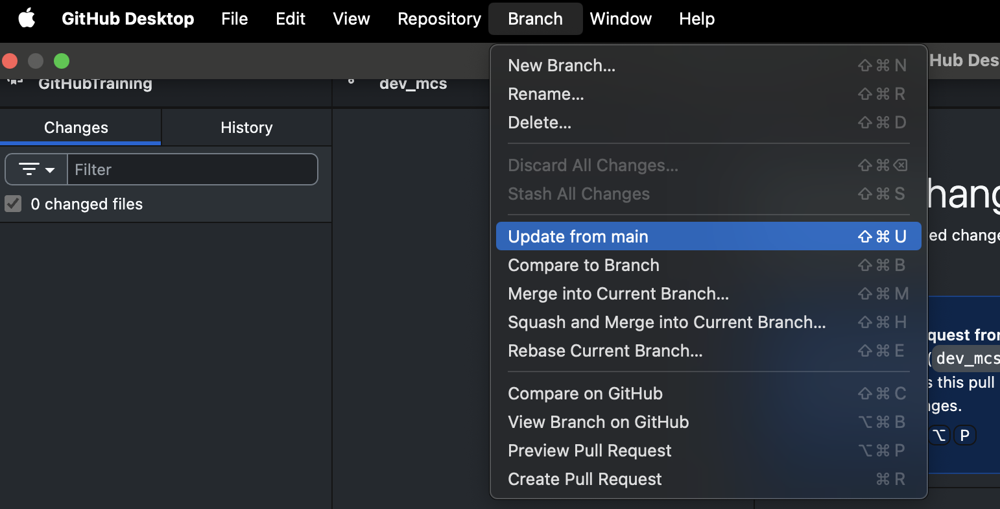

install.packages("pak")GitHub Training
An overview of GitHub and Codelists
2025-10-24
Git vs GitHub vs GitHub Desktop
Git is a distributed version control system that tracks changes in source code during software development and allows multiple developers to collaborate efficiently.
GitHub is a web-based platform that provides hosting for Git repositories, along with collaborative features like issue tracking, pull requests, and project management.
GitHub Desktop is a graphical user interface (GUI) application that simplifies the interaction with Git and GitHub, allowing users to perform common repository operations without using the command line.
Core Concepts
Repository (Repo)
A repository is essentially a project’s folder. It contains all the project files, including code, documentation, images, and, most importantly, the entire history of every change made to those files.
Explore repository
https://github.com/oxford-pharmacoepi/Tidy-R-programming-with-OMOP
It is nice to include it in any repository a README.md document to:
- Summarise the content of the repository.
- Instructions how to install your package, run your code or use your tool.
- Structure of the folders of the repository.
- How to contribute, indicate people how to contribute to the project.
- License
- Acknowledgments
- Contact
- Citation
Formatting .md file
You can usually format
#to add titles.----to add separator lines.-for bullet points.*text*for italic text.**text**for bold text.
Clone
Get a copy of the repository onto your local machine or GitHub account.
Branch
A branch is an independent line of development.
The default and main line of development is typically called the main branch.
Branches allow developers to work on new features or bug fixes in isolation without affecting the stable, main code.
Fork
A fork is a personal copy of another user’s repository. You can make changes to your copy without affecting the original. It’s often the first step in contributing to a project you don’t own.
- We will see this in the practical.
Open the project locally
Commit
A commit is a snapshot of your repository at a specific point in time. It’s the fundamental building block of Git’s history.
Every commit has a unique ID (SHA), an author, a timestamp, and a commit message that explains why the change was made.
Commits are what you create locally with Git.
Create a new file
Open the
mdsfolder.File>New File>Text File>your_name.mdAdd some content
Add a message in the commit box
Click commit
Don’t do anything else
Push & Pull
These are the actions used to synchronise your local Git repository with the remote repository on GitHub:
Push: To send your local commits from your computer to the remote repository on GitHub.
Pull: To fetch and download changes (commits) from the remote repository on GitHub to your local computer. (We will see it later)
Pull Request (PR)
A Pull Request is a mechanism for a developer to propose their changes (commits from a branch) to be merged into another branch (usually the main branch of the original project).
- PRs are where discussion, code review, and automated testing happen before the code is integrated.
Our first PR
Merge
The merge operation integrates the changes from one branch into another. When a Pull Request is approved, the repository maintainer will merge the feature branch into the main branch.
- Let’s merge your Pull Requests
Pull
Pull: To fetch and download changes (commits) from the remote repository on GitHub to your local computer.
Change to
mainbranchFetch origin
Pull from origin
How everything works
Git
| Command | Description |
|---|---|
git init |
Create a new local repository. |
git clone <url> |
Copy a remote repository locally. |
git remote add origin <url> |
Add a new remote repository. |
git status |
Check status of changes and branch. |
git add <file> |
Stage specific file(s) for commit. |
git commit -m "message" |
Commit staged changes. |
git log |
View commit history. |
git diff |
Show unstaged changes. |
git branch <name> |
Create a new branch. |
git checkout <branch> |
Switch to a branch. |
git merge <branch> |
Merge another branch into the current one. |
git fetch |
Download updates from remote (no merge). |
git pull |
Fetch and merge changes from remote. |
git push |
Push local commits to remote. |
git revert <commit> |
Revert a specific commit with a new one. |
GitHub Desktop: provides the User Interface.
Workflow

Need to update
Update from main
Update from main
Change to
your_branchbranchBranch>Update from mainPush

.gitignore
The .gitignore file tells git which files or folders to skip when tracking changes. It prevents temporary, sensitive, or unnecessary files from being added to a repository. Common examples include log files, build artifacts, and environment files. This keeps the repo clean and focused on essential code and assets.
You can ignore a file if you include the name on it
my_file.txt.You can ignore a folder if you include on it
folder/.You can ignore files using patterns (e.g. this would ignore all .txt files
*.txt)
Merging conflicts
Merging conflicts
Let’s create a merging conflict
Go to your branch
Update from main (if you did not do it before)
Edit Extensively the
README.mdfileOpen a Pull Request
Merging conflicts
A merging conflict can involve several files and folders, can be massive and sometimes unsolvable! Please follow the following tips to avoid merging conflicts:
Avoid renaming of files and folders.
Always Update from main before adding some changes to your branch.
Keep the changes the minimum possible time (<1 day).
Better 3 separated Pull Requests over 3 consecutive days than 1 merging conflict after 3 days!
Issues
An issue is a record used to track and manage tasks, bugs, or feature requests within a project. It serves as a central place for team members to describe a problem or idea, discuss potential solutions, assign responsibilities, and monitor progress. Issues often include details like titles, descriptions, labels, comments, and status updates, making it easier to collaborate, prioritise work, and maintain a clear overview of what needs to be done throughout the development process.
Issues
Labels: Labels are tags used to categorise and organise issues by topic, priority, or status.
Assignee: The assignee is the person responsible for handling or resolving the issue.
Type: The type indicates the nature of the issue, such as a bug, feature request, or task.
Link an Pull Request to an issue
You can use ‘magical’ words to close an issue from a pull request:
- close #12 / closes #12
- resolve #12 / resolves #12
- fix #12 / fixes #12
Remember this as we will use it later!
You can otherwise link issues manually using the development tab.
Templates
Templates can be used to create new repositories:
Codelists and conceptSetExpressions
Let’s get started
1 Make sure you have the latest version of the needed packages:
2 Set up your OMOP_DATA_FOLDER:
Open your .Renviron (usethis::edit_r_environ()) file and write the following:
OMOP_DATA_FOLDER="path/to/data"Then restart R.
CodelistGenerator
To deal with codelist and concept_set_expression objects we will use the CodelistGenerator package:
Codelist
A codelist is a named list of codes to be used in a study you can create a simple codelist as:
Codelist
Codelist
Codelist
As we have seen codelists are deterministic and do not depend on vocabularies, but they can be long and difficult to manage.
Export Codelist
Import a codelist in ATLAS
Really?
Import a codelist
If you want to be friends use .csv
Your turn
Go to the repository that we were working: https://github.com/oxford-pharmacoepi/TestRepository
Make sure you are in your branch
Make sure your branch is updated from main
Assign an issue (that starts with CODELIST STEP 1) to yourself
Create the codelist that you are asked to create
Save it in the codelist folder
Commit
Push
Open a Pull Request (link the Pull Request to the issue)
conceptSetExpression
A concept_set_expression is a named list that contains an expression:
concept_id + logic (exclude and descendants)
conceptSetExpression
We do not provide any function to create concept_set_expression, but they can easily be created as a list of tibbles.
Your turn
Go to the repository that we were working: https://github.com/oxford-pharmacoepi/TestRepository
Make sure you are in your branch
Make sure your branch is updated from main
Assign an issue (that starts with CONCEPT SET EXPRESSION STEP 2) to yourself
Go to ATLAS create the concept set expression
Export the json file from ATLAS and save it locally (copy paste)
Import the json file
Save the csv file
Delete the json file
Save it in the conceptsets folder
Commit
Push
Open a Pull Request (link the Pull Request to the issue)
Ask for a review
Let’s review
Live demo
Your turn
Provide a review (ask something random):
- To add another concept
- To change one of the logic
- To change the name of the concept set expression
Your turn
Do it yourself!
Whatever you asked in the review do it
Change the branch to the one your colleague was in
Edit the concept set with whatever random request you came with
Commit
Push
Ask for the review to the original author
From codelist to conceptSetExpression
You can easily convert a codelist to a concept_set_expression:
From conceptSetExpression to codelist
To do that you will need a cdm object to get the descendants and then use the validateConceptSetArgument() function:
Your turn
Make sure you are in your branch
Make sure your branch is updated from main
Assign an issue (that starts with CONVERT STEP 3) to yourself
Get the concept set expression
Convert it into a
codelistSave it in the
codelistfolderCommit
Push
Pull Request
You are ready
GitHub Training